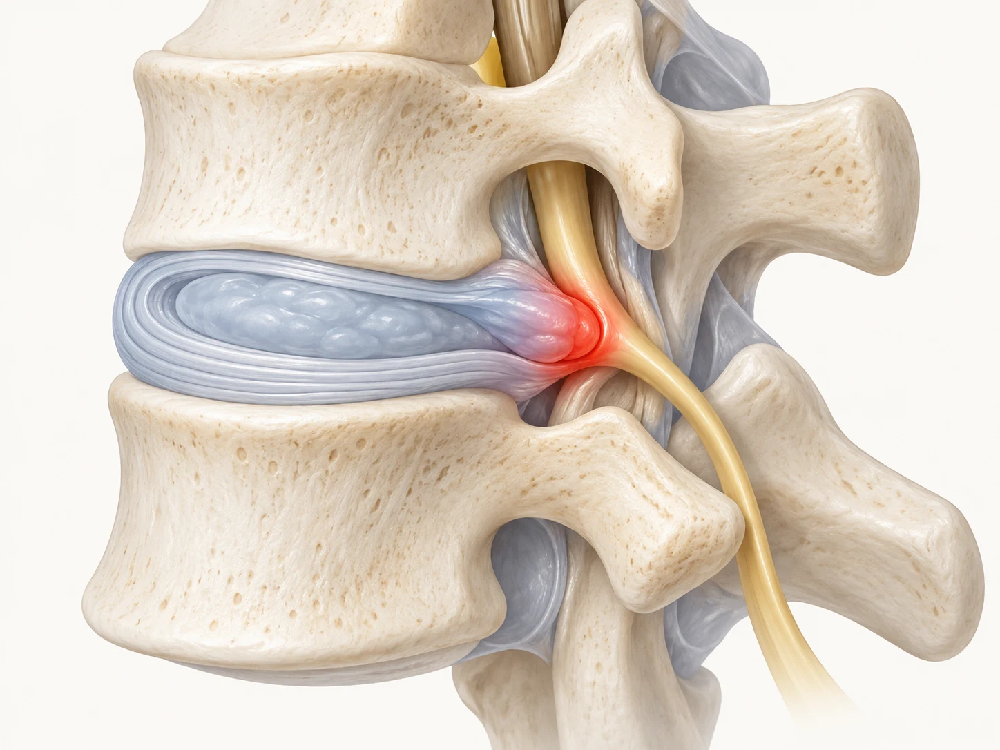
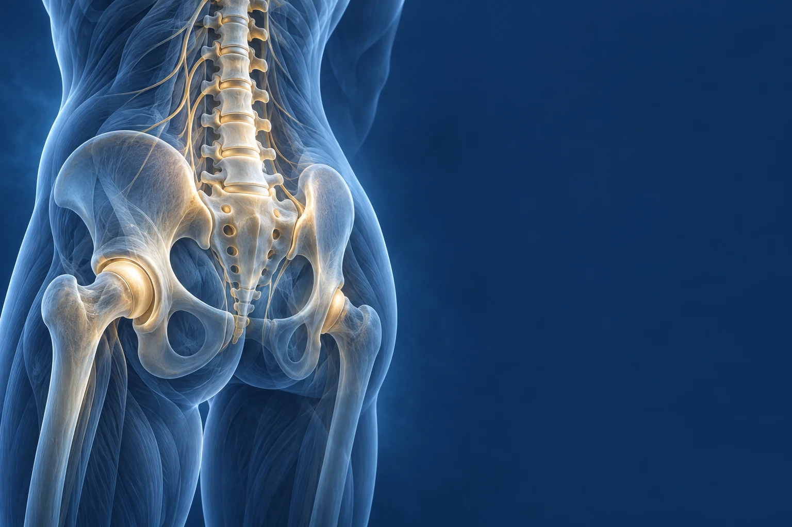
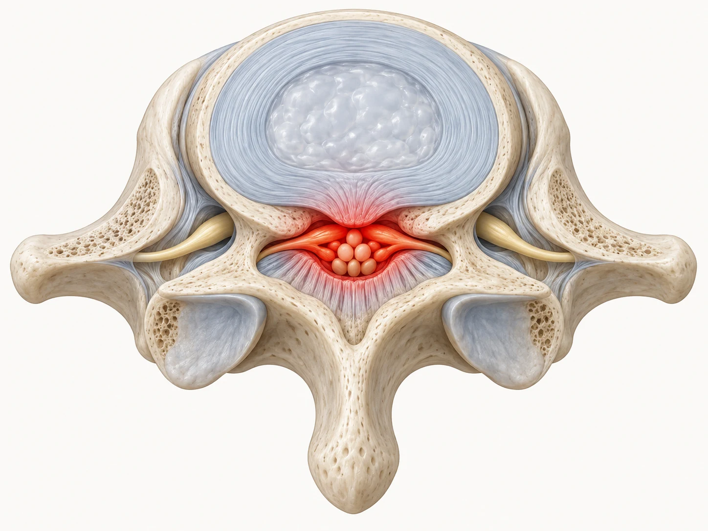
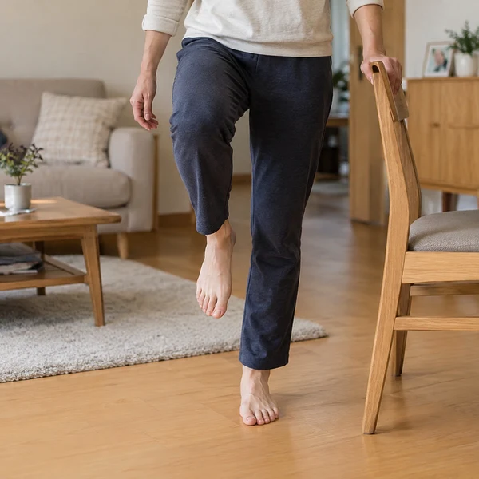
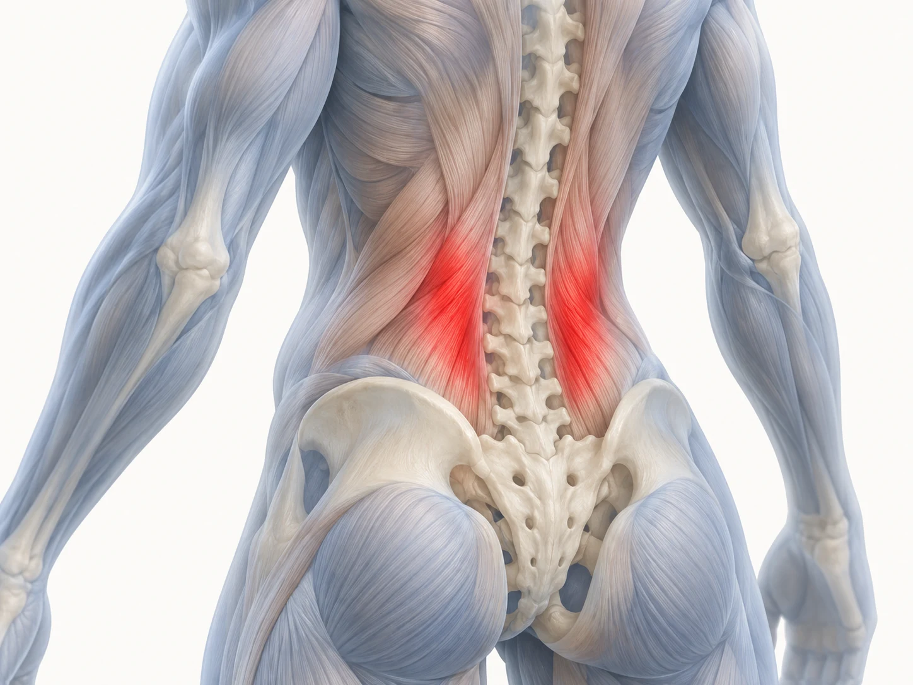
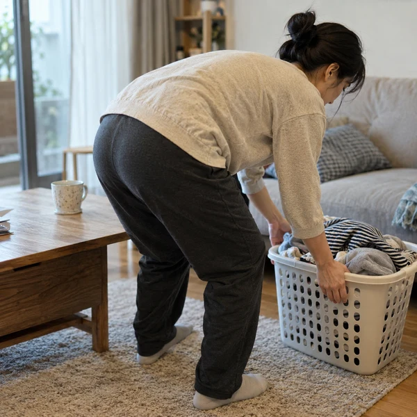
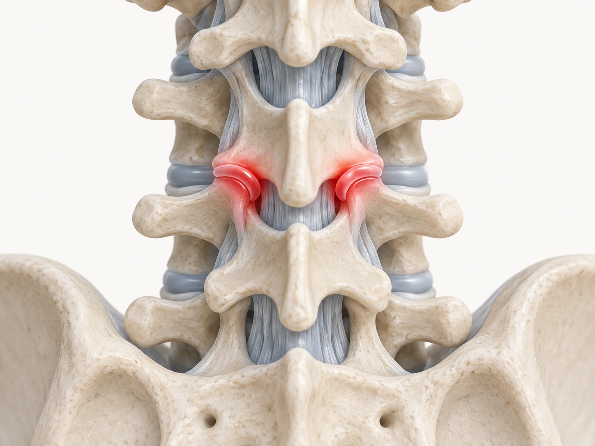
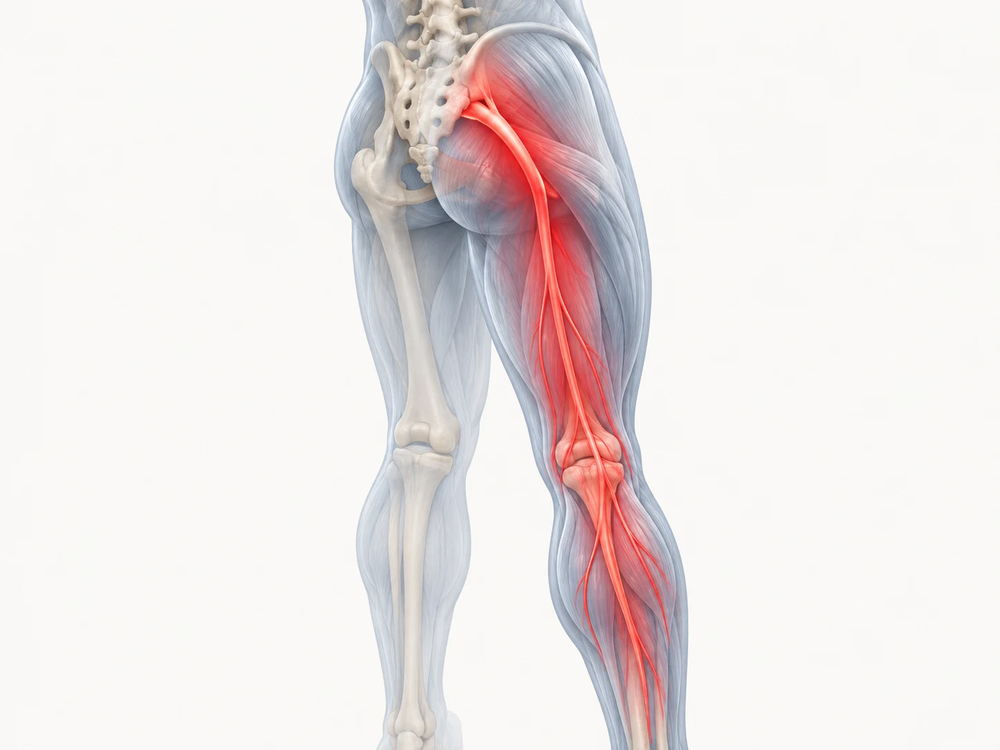

통증의 원인을 더 깊이 찾아가는 진료
“허리와 골반 주변 통증은 근육과 인대, 디스크, 관절 등 다양한 부위에서 시작될 수 있습니다.
통증의 위치만 보지 않고, 자세와 보행, 신경 증상까지 세심하게 살펴 필요한 검사와 치료
방향을 안내합니다.”
질환별 안내
ABOUT THE CONDITION
허리디스크(요추 추간판 탈출증)
허리뼈 사이의 디스크가 밀려나 주변 신경을 자극하거나 압박하는 질환입니다.

허리디스크의 원인
오래 앉아 있는 자세와 무거운 물건을 드는 동작은 허리에 부담을 줄 수 있습니다.
노화에 따른 변화나 외상도 디스크 손상과
관련됩니다.
의자에 장시간 구부정하게 앉아있는 습관
무거운 물건을 허리 힘으로 갑자기 들어 올리는 동작
허리 주변 근육 및 인대의 퇴행성 약화
낙상, 교통사고 등 외부 충격으로 인한 디스크 손상

SYMPTOMS
허리디스크 대표 증상
- 01
허리 통증과 함께 엉덩이, 다리, 발가락까지 찌릿하게 저림 (방사통)
- 02
허리를 앞으로 숙이거나 의자에 앉아있을 때 통증 심화
- 03
기침이나 재채기, 배변 시 허리와 다리에 강한 통증 발생
- 04
누워서 한쪽 다리를 들어 올리기 어려움
- 05
심한 경우 발가락이나 발목에 힘이 들어가지 않음
새로 생긴 대소변 조절 이상이나 회음부 감각 저하가 동반되면 즉시 응급 진료를 받아야 합니다.
허리디스크의 진단
허리 통증과 함께 엉덩이·다리로 뻗치는 통증이나 저림이 있는지 확인합니다.
감각·근력 등 신경 증상과 진찰 결과를 바탕으로
필요한
검사를 판단합니다.
문진·신체검진
통증이 시작된 시점과 양상, 병력과 생활 습관을 확인합니다. 압통과 움직임, 근력·감각 등을 함께 살펴 진단의 방향을 정합니다.
X-ray
뼈의 정렬과 관절 간격, 퇴행성 변화 등을 확인하는 검사입니다. 진찰 결과에 따라 촬영하여 골절이나 다른 뼈·관절 문제를 살펴봅니다.
검사는 증상과 진찰 결과에 따라 필요한 항목을 선택합니다.
ABOUT THE CONDITION
척추관 협착증
척추 안에서 신경이 지나는 통로가 좁아져 신경이 눌리는 질환입니다.

척추관 협착증의 원인
나이가 들면서 척추 관절·인대에 변화가 생기면 신경이 지나는 공간이 좁아질 수 있습니다.
뼈돌기나 척추의 구조적 문제도
영향을
줍니다.
노화로 인한 척추 관절과 인대의 두꺼워짐
척추뼈 주변에 형성되는 골극(뼈돌기)
오랜 시간 진행되는 척추의 퇴행성 변화

척추전방전위증 등 구조적 불안정성
SYMPTOMS
척추관 협착증 대표 증상
- 01
조금만 걸어도 다리가 터질 듯이 아파 자주 쉬어가야 함
- 02
허리를 뒤로 젖힐 때 통증이 심해지고, 숙이면 통증이 줄어듦
- 03
엉덩이부터 종아리, 발바닥까지 찌릿하고 차가운 느낌
- 04
밤에 다리에 쥐가 자주 나고 보행이 불편함
- 05
평지보다 언덕이나 계단을 오를 때 오히려 편함
척추관 협착증의 진단
걷거나 서 있을 때 심해지고 앉거나 허리를 굽히면 줄어드는 증상을 확인합니다.
신경학적 진찰과 필요한 영상검사를 통해 원인을
살펴봅니다.
문진·신체검진
통증이 시작된 시점과 양상, 병력과 생활 습관을 확인합니다. 압통과 움직임, 근력·감각 등을 함께 살펴 진단의 방향을 정합니다.
X-ray
뼈의 정렬과 관절 간격, 퇴행성 변화 등을 확인하는 검사입니다. 진찰 결과에 따라 촬영하여 골절이나 다른 뼈·관절 문제를 살펴봅니다.
검사는 증상과 진찰 결과에 따라 필요한 항목을 선택합니다.
ABOUT THE CONDITION
급·만성 요통 및 요추 염좌
요통은 허리 주변의 통증을 뜻하며 원인이 항상 한 가지로 확인되는 것은 아닙니다.

급·만성 요통 및 요추 염좌의 원인
갑작스러운 움직임이나 무리한 작업으로 허리 근육과 인대에 부담이 생길 수 있습니다.
오래 유지하는 자세와 근력 저하도 함께
살펴봅니다.

준비 없이 갑자기 허리를 비틀거나 숙이는 동작
무거운 물건을 들다가 허리에 담이 들린 경우
장시간 무너진 자세로 일하거나 운전하는 습관
코어 근육 약화로 인한 허리 지지력 감소
SYMPTOMS
급·만성 요통 및 요추 염좌 대표 증상
- 01
허리를 숙이거나 펼 때 묵직하고 찌르는 듯한 통증
- 02
허리 주변 근육이 딱딱하게 굳어 움직이기 힘듦
- 03
침대에서 일어나거나 양말을 신기 어려움
- 04
통증으로 인해 몸이 한쪽으로 기울어지는 증상
- 05
특정 동작을 할 때 삐끗하는 느낌과 함께 뚜렷한 통증
급·만성 요통 및 요추 염좌의 진단
통증이 시작된 동작과 허리 근육의 압통, 움직임 제한을 확인합니다.
신경 증상이나 외상 소견이 있는지 살펴 추가 검사
필요성을
판단합니다.
문진·신체검진
통증이 시작된 시점과 양상, 병력과 생활 습관을 확인합니다. 압통과 움직임, 근력·감각 등을 함께 살펴 진단의 방향을 정합니다.
움직임·기능 평가
아픈 부위를 누르거나 움직일 때의 반응을 확인합니다. 관절의 움직임 범위와 근력, 일상 동작에서 나타나는 불편함을 함께 평가합니다.

신경학적 진찰
통증이 퍼지는 범위와 감각·근력·반사 등을 살펴봅니다. 신경 자극이나 다른 신경계 문제를 의심할 소견이 있는지 확인합니다.
검사는 증상과 진찰 결과에 따라 필요한 항목을 선택합니다.
ABOUT THE CONDITION
척추후관절 증후군
척추 뒤쪽에서 움직임과 안정성을 돕는 후관절이 통증의 원인이 되는 상태입니다.

척추후관절 증후군의 원인
척추 뒤쪽의 작은 관절에 퇴행성 변화나 손상이 생기면 허리 통증이 나타날 수 있습니다.
허리를 젖히거나 비트는 동작은 관절에
부담을 더할 수 있습니다.
나이가 들며 진행되는 척추 관절의 퇴행성 변화
허리를 반복해서 뒤로 젖히는 동작
허리를 비틀거나 무리하게 사용하는 활동
넘어지거나 부딪힌 뒤 생긴 관절 손상
SYMPTOMS
척추후관절 증후군 대표 증상
- 01
허리 한쪽 또는 양쪽에 느껴지는 묵직한 통증
- 02
허리를 뒤로 젖히거나 몸통을 돌릴 때 심해지는 통증
- 03
엉덩이와 허벅지 위쪽으로 퍼지는 불편감
- 04
오래 서 있거나 움직이기 시작할 때 느껴지는 뻣뻣함
척추후관절 증후군의 진단
허리를 젖히거나 돌릴 때 통증이 달라지는지 확인합니다.
압통과 신경 증상을 함께 살피며, 영상 소견만으로 원인을 단정하지
않고
종합적으로 평가합니다.
문진·신체검진
통증이 시작된 시점과 양상, 병력과 생활 습관을 확인합니다. 압통과 움직임, 근력·감각 등을 함께 살펴 진단의 방향을 정합니다.
X-ray
뼈의 정렬과 관절 간격, 퇴행성 변화 등을 확인하는 검사입니다. 진찰 결과에 따라 촬영하여 골절이나 다른 뼈·관절 문제를 살펴봅니다.
검사는 증상과 진찰 결과에 따라 필요한 항목을 선택합니다.
ABOUT THE CONDITION
좌골신경통
허리에서 다리로 이어지는 신경이 자극되면서 생기는 방사통을 말합니다.

좌골신경통의 원인
허리에서 다리로 이어지는 신경이 눌리거나 자극받아 통증과 저림이 나타나는 증상입니다.
디스크·협착증 등 신경을 자극하는
원인을
확인하는 것이 중요합니다.
허리디스크로 인한 신경 압박
척추관이 좁아지며 생기는 신경 자극
척추뼈가 앞쪽으로 밀리는 전방전위증
허리나 골반 주변의 손상
SYMPTOMS
좌골신경통 대표 증상
- 01
엉덩이에서 한쪽 다리 뒤로 이어지는 날카롭거나 화끈한 통증
- 02
다리와 발, 발가락에 느껴지는 저림
- 03
다리 일부의 감각이 무뎌지거나 둔해짐
- 04
다리에 힘이 빠지거나 움직임이 불편함
- 05
기침·재채기 또는 움직임에 따라 심해지는 통증
양쪽 다리의 심한 마비나 대소변 조절 이상이 생기면 즉시 응급 진료가 필요합니다.
좌골신경통의 진단
엉덩이에서 다리로 이어지는 통증의 범위와 저림·근력 변화를 확인합니다.
신경학적 진찰을 통해 허리나 주변 구조의 문제를 함께
살펴봅니다.
문진·신체검진
통증이 시작된 시점과 양상, 병력과 생활 습관을 확인합니다. 압통과 움직임, 근력·감각 등을 함께 살펴 진단의 방향을 정합니다.
X-ray
뼈의 정렬과 관절 간격, 퇴행성 변화 등을 확인하는 검사입니다. 진찰 결과에 따라 촬영하여 골절이나 다른 뼈·관절 문제를 살펴봅니다.
검사는 증상과 진찰 결과에 따라 필요한 항목을 선택합니다.
TREATMENT
회복을 위한 치료 프로그램
환자의 상태에 따라 필요한 치료를 판단합니다.